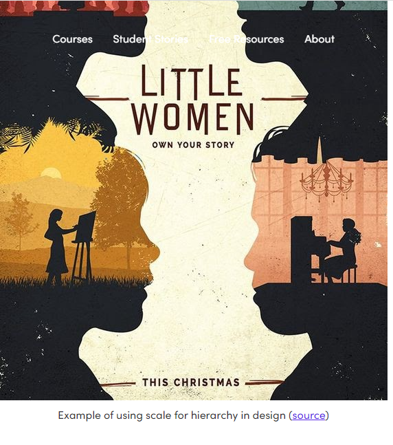
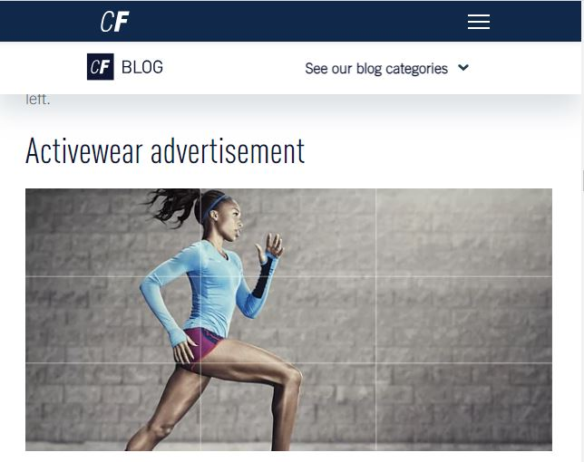
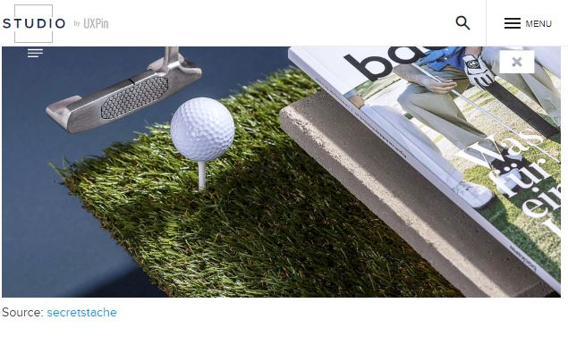

Visual Hierarchy
Flux Academy
flux-academy.com when it comes to design, visual hierarchy is related to all the elements you see in a design and how they are perceived in order of importance.
In this fan recreation of the Little Women movie, we see scale used in a way that might break the rules of design but is actually quite effective for communicating the plot of this film.
when using scale to create hierarchy, one element should be larger than the other. But in this storyline of this plot, four different female characters carry equal weight. For this reason, it makes sense that the silhouettes of all four women are the same size. What varies is what’s shown inside each silhouette which gives you a glimpse into that character.
Rule of Thirds
CareerFoundry
careerfoundry.com The rule of thirds is a method of breaking up an image or design into different sections using columns and rows that form a grid.
The photographer of this photo did an amazing job using the rule of thirds to create a sense of movement and action.
Although the medium is static, the placement of the runner gives the viewer the idea that there is motion from a point A to a point B. It is dynamic, uncluttered, and balanced.
Contrast
UXpin
uxpin.com When it comes to web design, the concept of contrast is often discussed in terms of aesthetics and visual appeal. However, the truth is that contrast plays a much more important role in the overall usability and accessibility of a website.
Contrast in web design refers to the relationship between two or more design elements, such as text and background that stand out in relation to one another. It is about emphasizing the differences between these elements rather than their similarities.
Textures and patterns can help you create high-contrast designs when their characteristics are significantly different from each other. For instance, pairing a rough textured background with smooth foreground text would add contrast to the design.